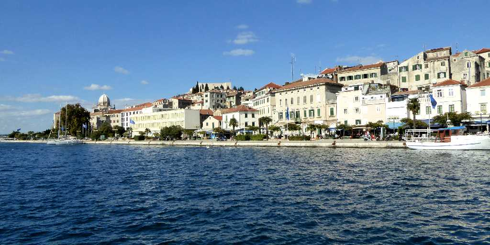
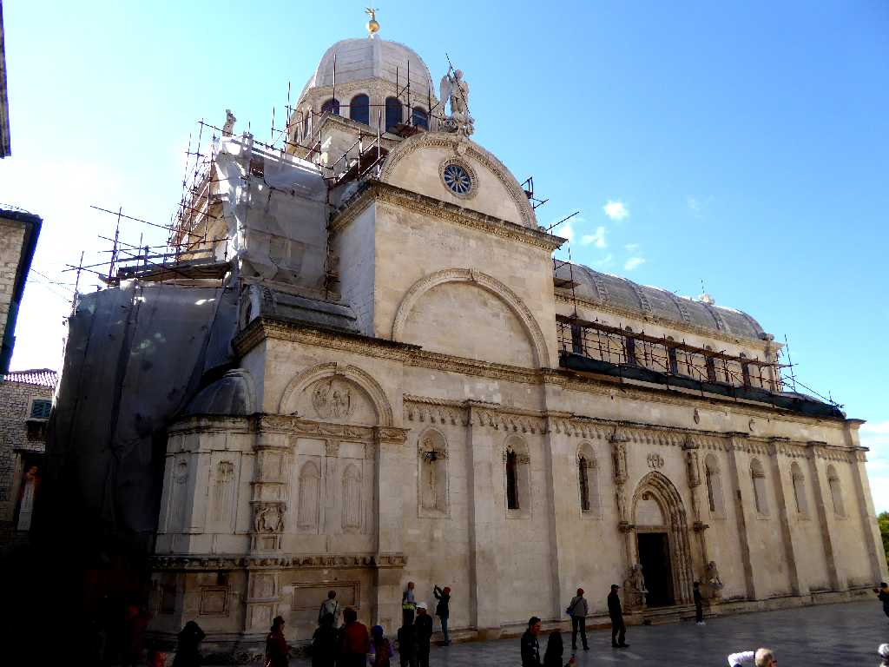
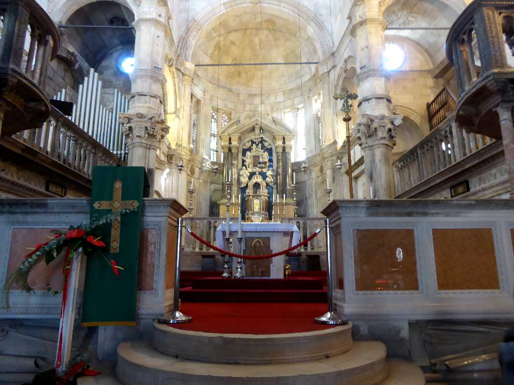
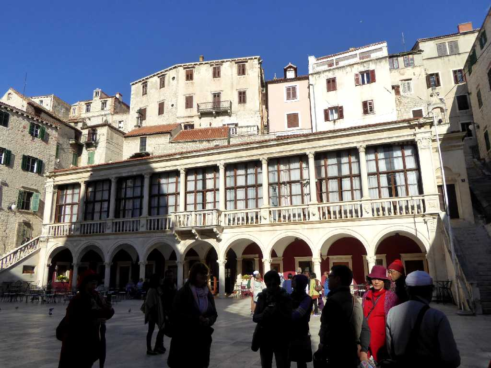
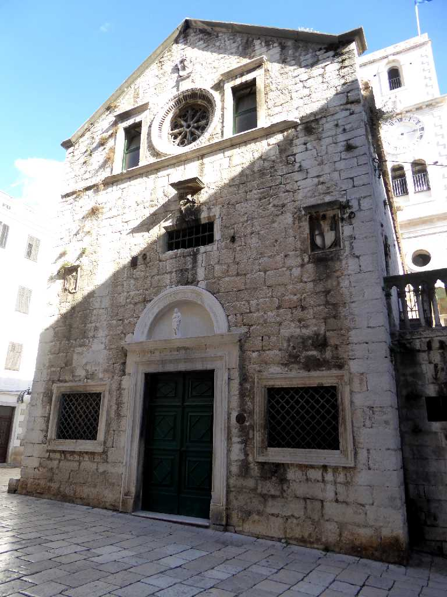
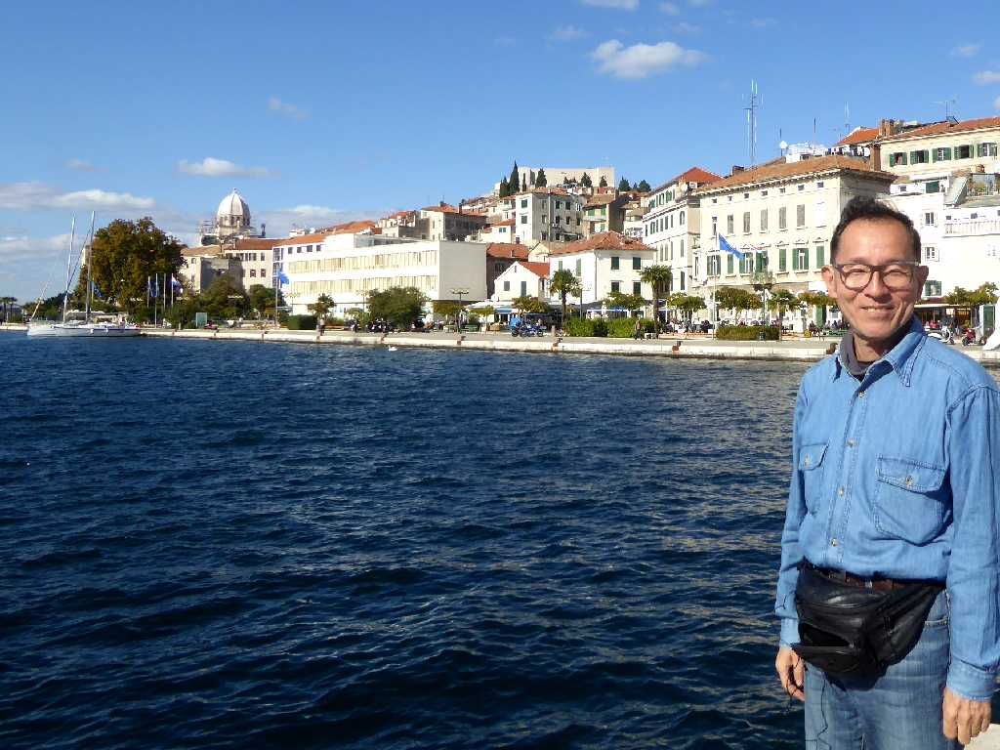

Šibenik
アドリア海に面したクロアチア最古の都市シベニク

Katedrala svetog Jakova
１５世紀にレンガや木の補助を全く使わず創られた聖ヤコブ大聖堂は石造建築教会としては世界最大で司教座が置かれている

Oltar Katedrala svetog Jakova
祭壇中央下のキリストの彫刻はルネサンス期の傑作と云われている

Gradska vijećnica
１６世紀に創られたルネサンス様式のシベニク市庁舎

Crkva svetog Ivana Krstitelja
１５世紀に創られたゴシック様式の聖イヴァン教会

October 12 2016 Šibenik